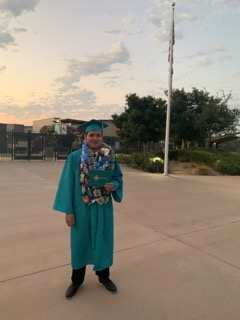
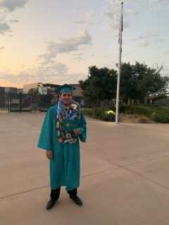

Joel Villegas
I’m Joel Villegas I am first year currently attending the University of California Riverside. I am a Biology Major following a premed track. I am originally from San Diego and moved to Riverside for college. I have work experience and internship experience. I have worked at restaurants and currently working at the Rivera Library at UCR. I have an internship at Palomar Hospital in San Diego. The internship allows me to work alongside nurses and other patient care workers to provide great care to patients. This internship allows me to explore my interests and helped form my choice of entering the medical field as a profession or not.
I’m Joel Villegas I am first year currently attending the University of California Riverside. I am a Biology Major following a premed track. I am originally from San Diego and moved to Riverside for college. I have work experience and internship experience. I have worked at restaurants and currently working at the Rivera Library at UCR. I have an internship at Palomar Hospital in San Diego. The internship allows me to work alongside nurses and other patient care workers to provide great care to patients. This internship allows me to explore my interests and helped form my choice of entering the medical field as a profession or not.
I’m Joel Villegas I am first year currently attending the University of California Riverside. I am a Biology Major following a premed track. I am originally from San Diego and moved to Riverside for college. I have work experience and internship experience. I have worked at restaurants and currently working at the Rivera Library at UCR. I have an internship at Palomar Hospital in San Diego. The internship allows me to work alongside nurses and other patient care workers to provide great care to patients. This internship allows me to explore my interests and helped form my choice of entering the medical field as a profession or not.
Experience
Colllection Maintenance
• Sorted Books following Library of Congress Algorithim
• Followed Library Database (Alma)
• Worked with others employees to divide tasks equally
Cashier
• Took Customer Orders at a fast-pace
• Imporoved custumor satisfaction to 90%
Pathmaker Intern
• Handled Patient requests
• Served for over 120 hours with expierance on ICU floor and Med/Surg
• Worked alongside nurses, CNA's, Respiratory Therpists, etc.
• CPR Certified and ongoing training certified
Education
UC Riverside
Portfolio


